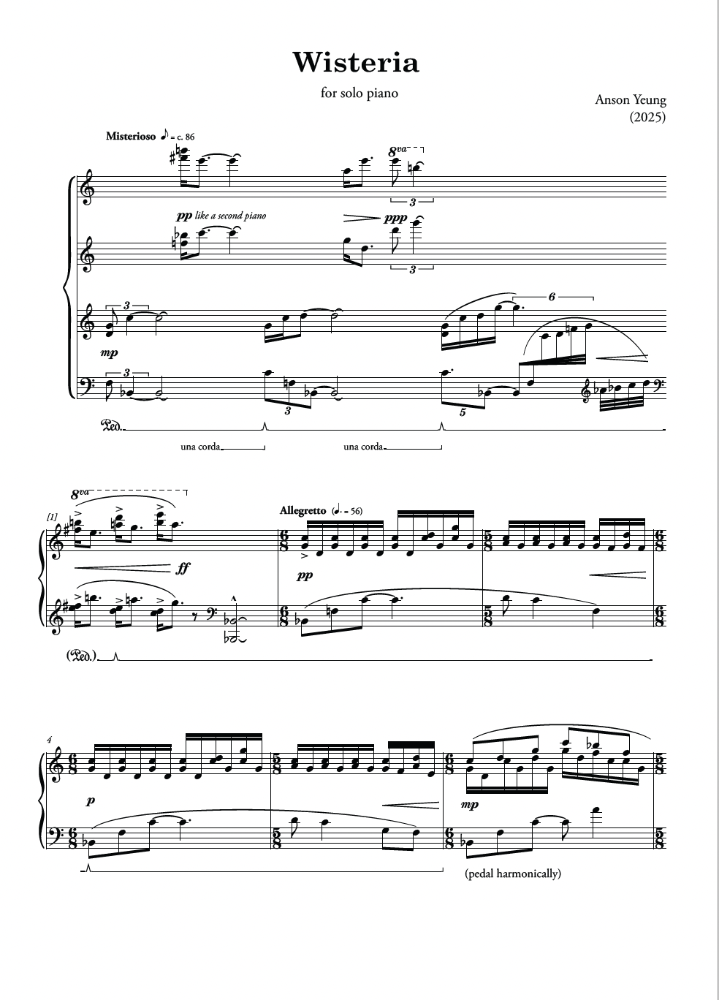
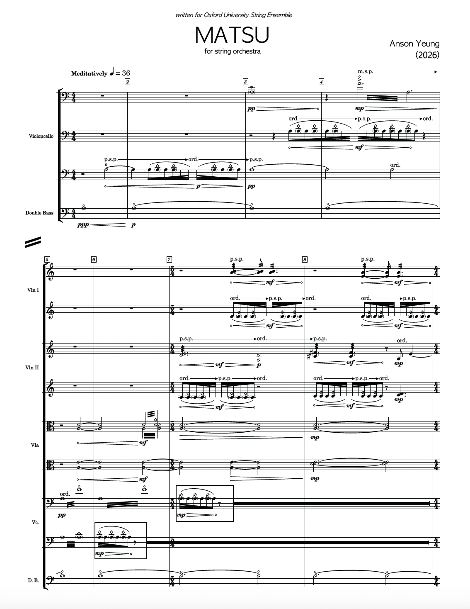
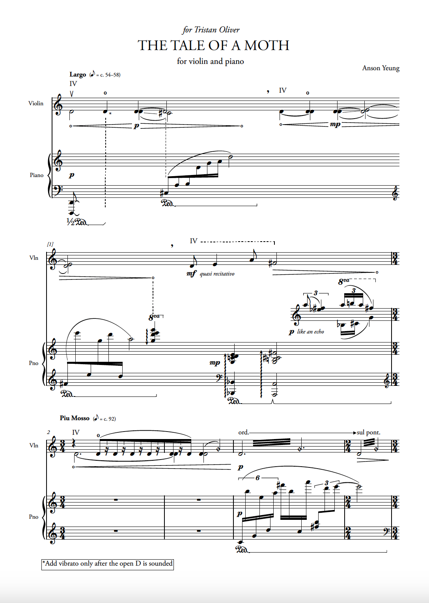
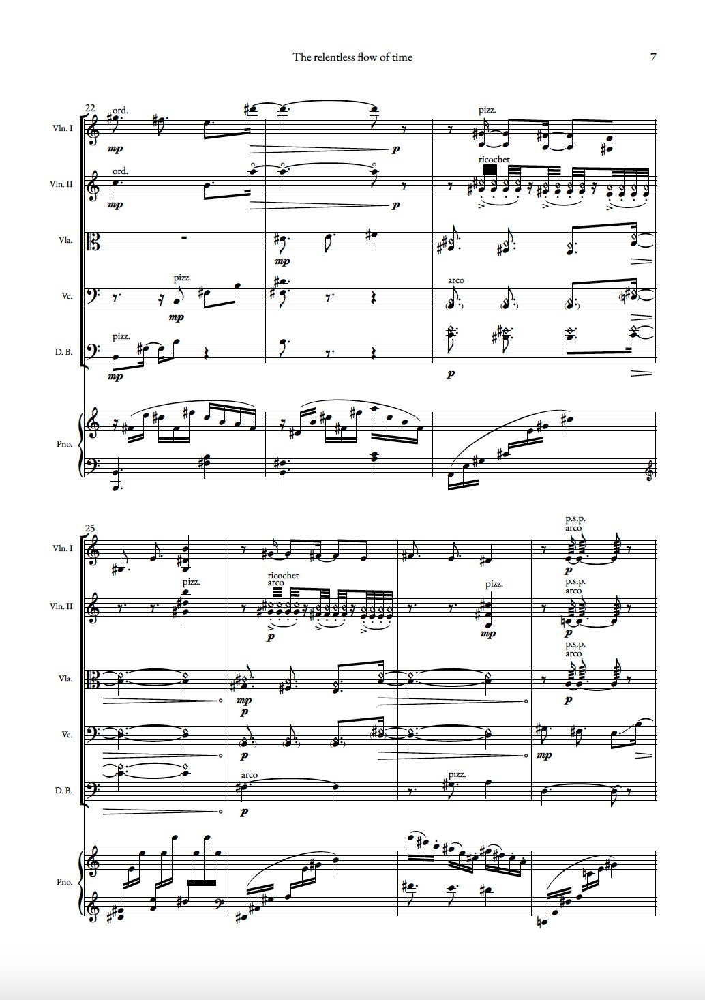
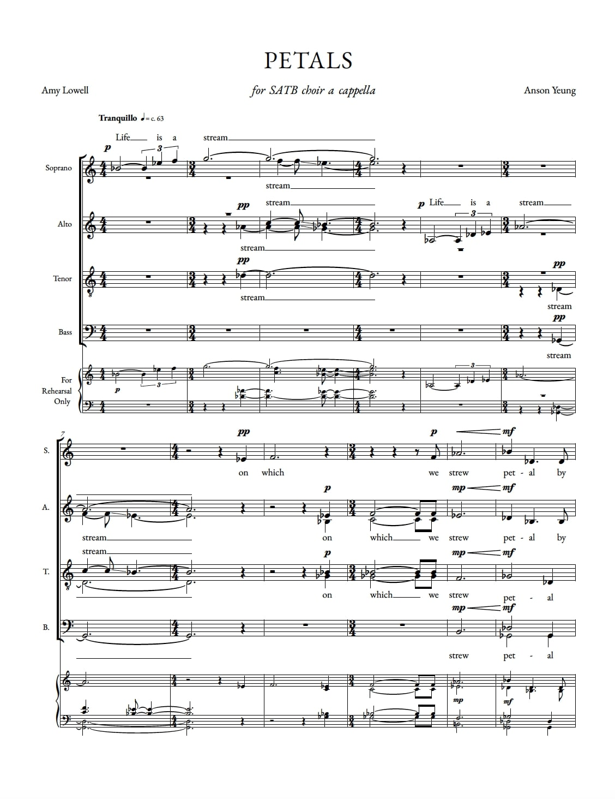

Concert Works
My music reflects on the relationship between nature, human experience, and life. As a Hong Kong–born composer, my current focus is integrating East Asian musical traditions with contemporary Western harmony. In particular, my works explore the possibilities of quartal and quintal harmony. My most recent composition, Lost In Time, has been performed by the Adler Quartet in the Holywell Music Room.
Moreover, I am active as a classical pianist. Trained in the Hong Kong Academy for Performing Arts with Dr. Cheng Wai, I have performed internationally in the United Kingdom, the Czech Republic, the United States, and Hong Kong.
Wisteria - for solo piano (2026)
Inspired by walking down Queen's Lane in spring, with the wind blowing through the wisteria on the walls. In the middle, the sound of change-ringing bells can be heard. Listen to the audio below:

Matsu - for string orchestra (2026)

The Tale of a Moth - for violin and piano (2026)

Lost in Time - for piano sextet (2026)
On the surface, time appears as a continuous flow from past to present to future. Yet beneath this rational logic lies a more subjective dimension of time, one shaped by memory, emotion and perception which differs from person to person. This three-movement work explores the various ways time is experienced and felt.
A more detailed programme note is given in the full score

Petals - for unaccompanied SATB choir with divisi (2025)
Text by Amy Lowell (1874 – 1925)
Life is a stream
On which we strew
Petal by petal the flower of our heart;
The end lost in dream,
They float past our view,
We only watch their glad, early start.
Freighted with hope,
Crimsoned with joy,
We scatter the leaves of our opening rose;
Their widening scope,
Their distant employ,
We never shall know.
And the stream as it flows
Sweeps them away,
Each one is gone
Ever beyond into infinite ways.
We alone stay
While years hurry on,
The flower fared forth, though its fragrance still stays.
